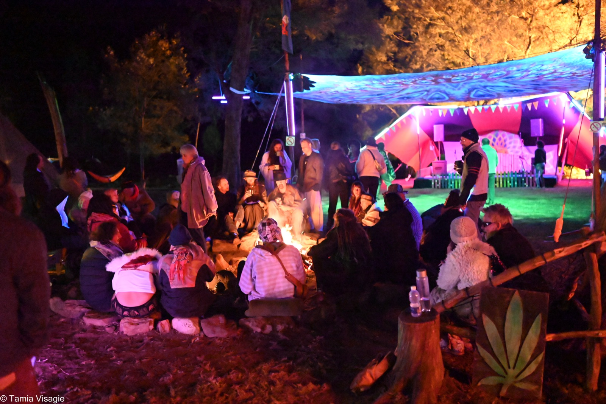
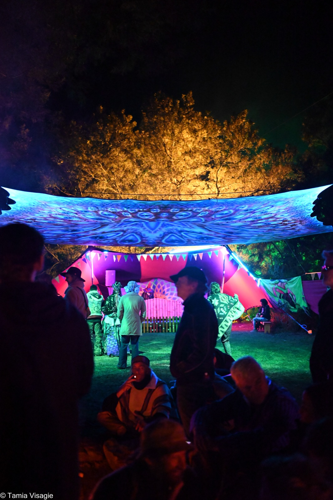
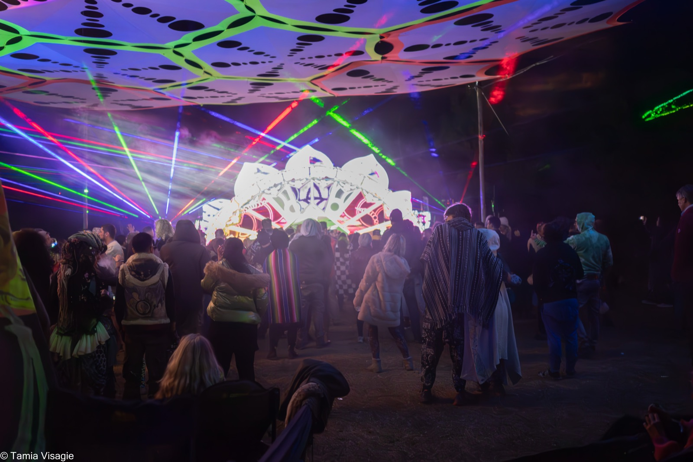

The Prayer for Peace
One moment, shared at the same time by Earthdance gatherings across the planet. It is the reason this festival exists.
The same words, at the same moment, everywhere
Across the world, Earthdance gatherings stop together for the same shared words. This map holds that wider field.

One prayer. One moment. Many dancefloors.
The prayer itself
This is the prayer shared across Earthdance gatherings worldwide at the moment of the linkup:

We are one global family
All colours, all races
One world united.
We dance for peace and the healing of our planet Earth
Peace for all nations.
Peace for our communities.
And peace within ourselves.
As we join all dancefloors across the world,
Let us connect heart to heart.
Through our diversity we recognise unity.
Through our compassion we recognise peace.
Our love is the power to transform our world.
Let us send it out
Now.
The prayer is carried by a modern hymn written by songstress Asheera Hart, performed simultaneously on every Earthdance dancefloor at the moment of the linkup. Read plainly, it is a set of commitments more than an incantation. That is how we treat it.
Anyone can dance. Doing it together, on purpose, is different.
A festival can say it stands for peace. A synchronised global moment demonstrates it.
The linkup asks something small but real of every gathering: to subordinate its own programme, for a moment, to something shared. The DJ stops being the centre. The stage stops being the centre. Several hundred thousand people, over the movement's history, have stood in that same pause.
Earthdance takes place around the International Day of Peace in September each year. The prayer is the thread that has connected every Earthdance event since the first global linkup in 1997 — and it is what separates this gathering from any other outdoor music event on the calendar.

How the moment happens here
At Kromrivier Farm, the Prayer for Peace lands at 01:00 SAST on Saturday 19 September 2026, held inside the heart of the festival weekend.
An hour before the linkup, at 00:00, we begin gathering people at Mellow Meadow. From there, a shared procession moves across the site toward Sonic Horizon, building intention as it goes and drawing the wider gathering into the moment together.
Everyone is encouraged to join the procession, and to come to Mellow Meadow earlier rather than only arriving at the last minute. The walk matters. It is part of how we arrive together, not just where we arrive.
As the linkup approaches in the early hours of Saturday morning, the gathering reaches the dancefloor at Sonic Horizon. The music carries us into the synchronised moment at 01:00, the prayer is shared, and then the dancefloor picks the rhythm back up and carries on — changed slightly, if we have done it right.
The surrounding local running order will still be shared closer to the event and announced on site.
You do not need to prepare anything, believe anything in particular, or be anywhere other than where you already are. If you are on the farm that day, you are part of it.

One planet, one dancefloor
The Prayer for Peace happens once a year. In 2026, Cape Town's part of it happens at Kromrivier Farm.